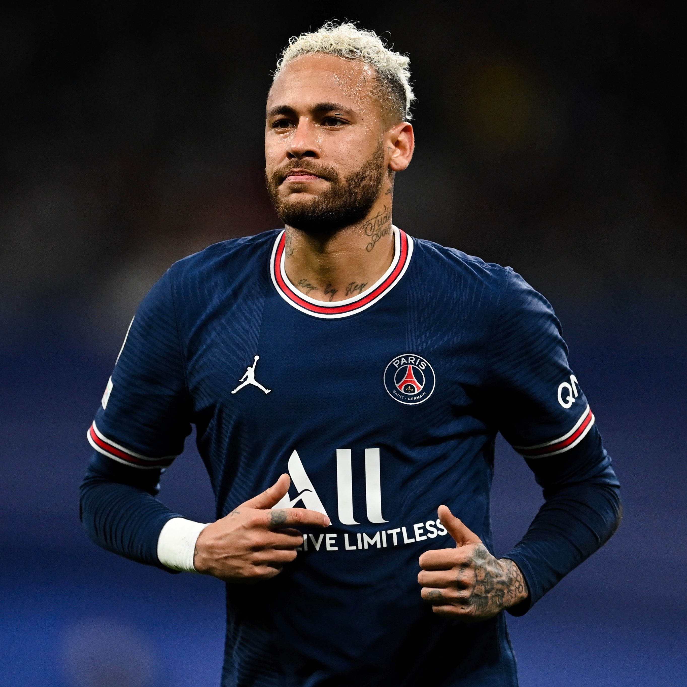
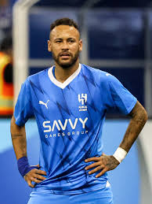
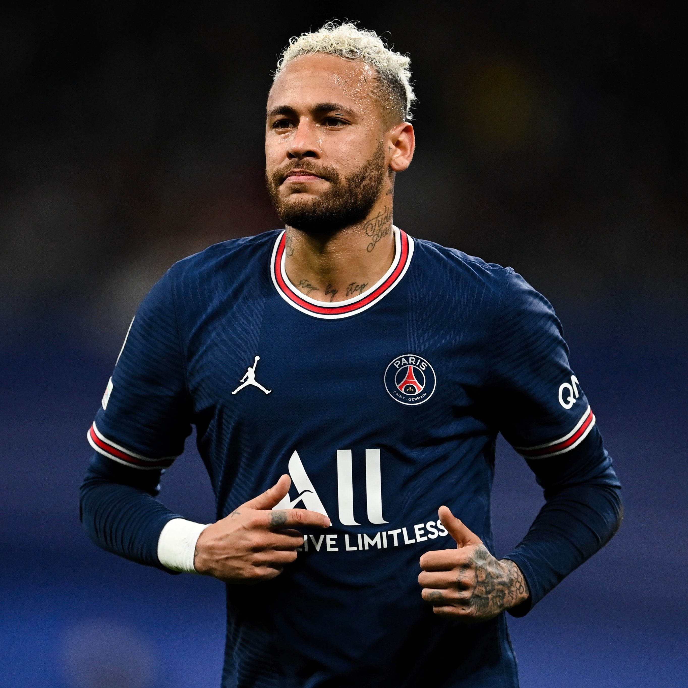
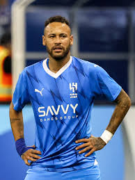

Neymar (1992) é um futebolista brasileiro, considerado um dos maiores da história. Ganhou diversos títulos jogando pelo Santos Futebol Clube, onde iniciou sua carreira aos 11 anos de idade. Sua posição é atacante, atuando como ponta-esquerda. Neymar jogou em diversos times. Seu mais recente contrato foi assinado com o Al-Hilal da Arábia Saudita, onde vai jogar durante dois anos.
Em 2003, Neymar entrou para as divisões de base do Santos Futebol Clube. Sua estreia no time profissional foi em 2009, e ele foi eleito o jogador revelação do Campeonato Paulista, onde o Santos ficou em segundo lugar. Em 2010, Neymar ajudou o Santos a vencer o Campeonato Paulista e a Copa do Brasil, sendo o artilheiro desta última com onze gols. Em 2011, conquistou o bicampeonato paulista e a Taça Libertadores, marcando um gol na final contra o Peñarol. Também em 2010, foi convocado para a seleção principal do Brasil e, em 2011, ajudou o Brasil a vencer o Campeonato Sul-Americano Sub-20.
Em março de 2013, Neymar assinou contrato com o Barcelona e foi apresentado oficialmente no Camp Nou em 3 de junho, diante de 56 mil torcedores. Durante seus quatro anos no clube, ele disputou 186 partidas, marcou 105 gols e conquistou oito títulos. Neymar permaneceu no Barcelona até julho de 2017, quando sua saída foi oficialmente anunciada pelo clube em 2 de agosto.
Neymar foi apresentado ao PSG em 4 de agosto de 2017, após o clube pagar uma multa rescisória de 222 milhões de euros ao Barcelona. Durante seus seis anos no PSG, conquistou 10 títulos, incluindo três Campeonatos Franceses e três Copas da França. Apesar das lesões, atuou em 173 jogos e marcou 118 gols. Em 17 de agosto de 2023, após a negociação com o Al-Hilal, Neymar se despediu do PSG.
Neymar foi contratado pelo Al-Hilal, da Arábia Saudita, em 17 de agosto de 2023, com um contrato de duas temporadas e um salário de 320 milhões de euros (1,7 bilhões de reais). O clube saudita pagou uma multa de 100 milhões de euros ao PSG, devido ao contrato de Neymar que ia até 2027. A apresentação de Neymar ao Al-Hilal ocorreu em 19 de agosto de 2023, com um espetáculo no Estádio Rei Fahd, em Riade.
Neymar foi convocado para a Seleção Brasileira em julho de 2010 e marcou um gol em seu primeiro amistoso. Ele não participou da Copa do Mundo de 2010, na África do Sul. Em 2014, no Brasil, Neymar sofreu uma fratura nas costas e ficou fora do torneio após uma joelhada de Zúñiga. Na Copa de 2018, na Rússia, o Brasil foi eliminado nas quartas de final pela Bélgica pelo placar de 2 a 1, com uma defesa de mão trocada do goleiro Courtois, da Bélgica. Em 2022, no Catar, Neymar viu o Brasil ser eliminado nas quartas de final pela Croácia, que venceu nos pênaltis.
Entre em contato com nosso suporte
Enviar e-mail Mais Infomações Voltar para Sobre